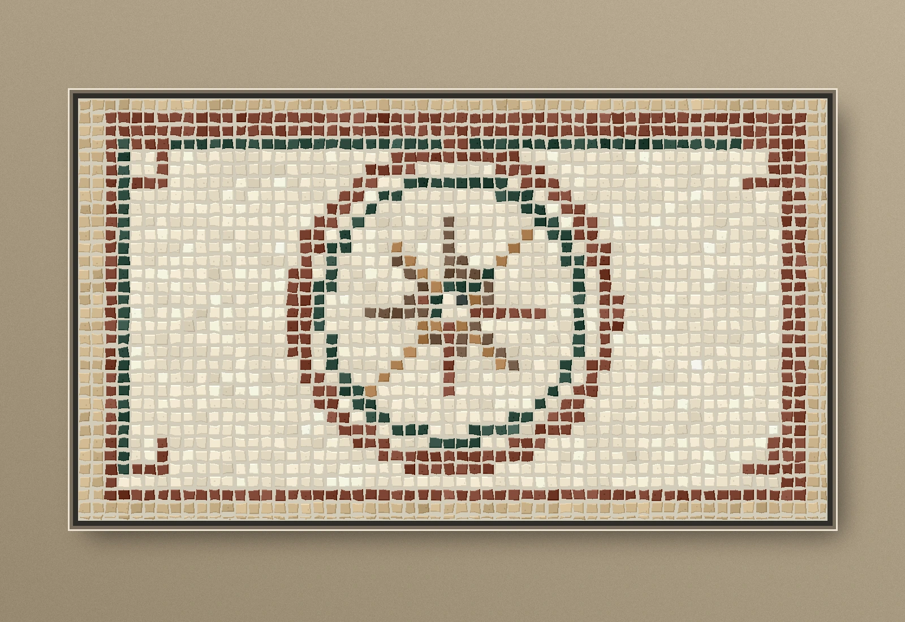

Ampliar imagen01 / GEOMÉTRICO
Rosa de los vientos
Composición radial de inspiración mediterránea, con orlas en piedra clara, verde y rojiza. Pensada para un paño arquitectónico o patio.
Ver características del modelo
- Teselas de formato y espesor por definir
- Mármol claro y piedras de contraste, sujetos a disponibilidad
- Orla perimetral integrada en la composición
- Orientación y dimensiones personalizables mediante diseño previo
Diseño conceptual · Sin precio publicado